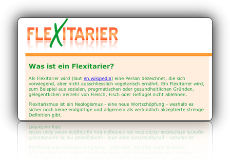

Flexitarier
Die Welt ist nicht schwarz-weiß, auch wenn uns ein aufkeimender Podcast das derzeit suggerieren will.

Warum sollte man sich also vor die Wahl Fleisch oder kein Fleisch stellen lassen? Stefan Sommer vom Iguana/Roadkill-Blog hat aus diesem Grund die Seite Flexitarier.de eröffnet, auf der er den neugierigen Besucher über das Flexitariertum aufklärt.
Man reduziert seinen Fleischkonsum spürbar, teils aus ethischen, teils aus gesundheitlichen Gründen, und gibt sich nur noch zu besonderen Gelegenheiten dem toten Tier hin. Das halte ich persönlich für äußerst nachahmenswert.
Keine Kommentare zu "Flexitarier"
- Externe Links im selben Fenster öffnen
- Externe Links in neuem Fenster öffnen
Rick
Wieso wusste ich bloß schon bereits instintiv dass hier mal wieder eine neue Essstörung erfunden wurde bevor ich den Artikel überhaupt noch geöffnet hatte?
Wie auch immer, das schreit natürlich nach einem baldigen Artikel darüber bei U9TA, und es ist auch klar dass dabei dorthin verlinkt werden wird wo ich die Anregung herhabe...
Herschel Rubinstein
sehr gut, ich bin schon gespannt. würdige bitte auch alle spielarten des veganerismus, bei denen man beispielsweise nichts ist, was einen schatten wirft.
Blumenmann
War das nicht der Veganer Stufe 5?
Was ich an dieser Einstellung schlimm finde ist, das die ganzen Tiere dann völlig umsonst sterben wenn sie doch niemand mehr isst.
Herschel Rubinstein
nun ja, man ist, wenn man seinen fleischkonsum drosselt, teil einer entwicklung. je mehr menschen das machen, desto weniger fleisch wird produziert. das passiert nicht von heute auf morgen, sondern zieht sich über lange zeit hin.
die fleischproduzenten werden dieser entwicklung mit hoher wahrscheinlichkeit folgen.
Rick
Ähm. Eine fleischarme Ernährung mit hochwertigem Fleisch (und ab und an Genuß für die Seele), ergänzt um das ganze restliche Zeuchs (Vollwert, Kohlenhydrate, Ballaststoffe, wertvolle Fette, Vitamine usw usf) ist sicherlich die gesündeste Form der Ernährung (wobei gesund natürlich regional variiert - es gibt Regionen wo die Menschen nur Fisch, Reis und allerei Obst/Gemüse haben und trotzdem gesund steinalt werden). Allerdings zum gesund leben muss man sich nicht unbedingt Flexitarier nennen der dadurch erst recht wieder zum Ernährungsmethodiker/-neurotiker wird.
Verlässlicher Indikator dass man seine Ernährung psychisch nicht im Griff hat:
Man reist in eine weniger überzüchtete Gesellschaft, nennt dort sein Schleiferl (vegan, vegetarisch, binge, Bingen, Steinzeit, flexitarisch etc) und die Gegenseite sagt freundlich : "Hää?!"
Herschel Rubinstein
einer besonneneren gesellschaft, die nicht von einer identitätskrise zur nächsten eiert, muss man mit solchen begrifflichkeiten nicht kommen.
aber anstatt einem überzeugten vegetarier, der sich durch missionarischen übereifer hervortut, erklären zu wollen, man esse fleisch, aber eben nur mit bedacht, einfach zu sagen, man sei 'flexitarier', hat einen viel höheren provokationswert
und die idee dahinter erscheint mir im moment sehr vernünftig, auch wenn sie natürlich nur einen teilaspekt gesunder ernährung beleuchtet. dass man dafür ein schlagwort wie 'flexitarier' braucht, darf selbstverständlich bezweifelt werden.
Rick
Du hast natürlich auch recht wenn Du von einem Provokationswert sprichst, es ist nicht auszuschließend dass in einer ausreichend bescheuerten überzüchteten Gesellschaft dieser tatsächlich notwendig ist um nicht vor die Hunde (Flexitarier) oder Tomaten (Veganer) zu gehen.
Wenn man allerdings vom alten Schrott & VollKorn ist darf man auch fragen: sind Flexitarier ernährungstechnische Memmen die nicht den Mut haben in Gesellschaft Vegetarier zu sein? Was kommt als Nächstes? Flexisexuelle? Also Leute die sich nur manchmal auch mit einem anderen Geschlecht vergnügen aber nicht die Kraft haben zu sagen sie wären bisexuell geprägt? Oder Flexirechte die Neonazis grundsätzlich ablehnen, aber bei der WM sich schon mal die Fahne der eigenen Mannschaft ins Auto / aufs Fahrrad klemmen?
jasper.
guter punkt rick.
Herschel Rubinstein
ja ja, gott sagt: du sollst heiß sein, oder du sollst kalt sein. bist du aber lau, so spucke ich dich aus.